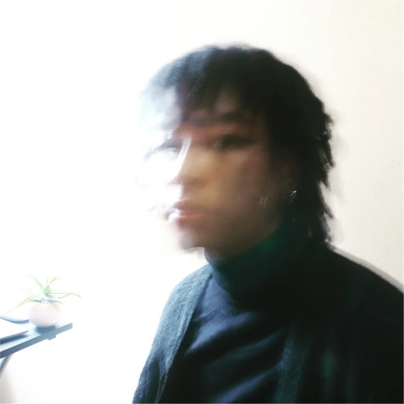
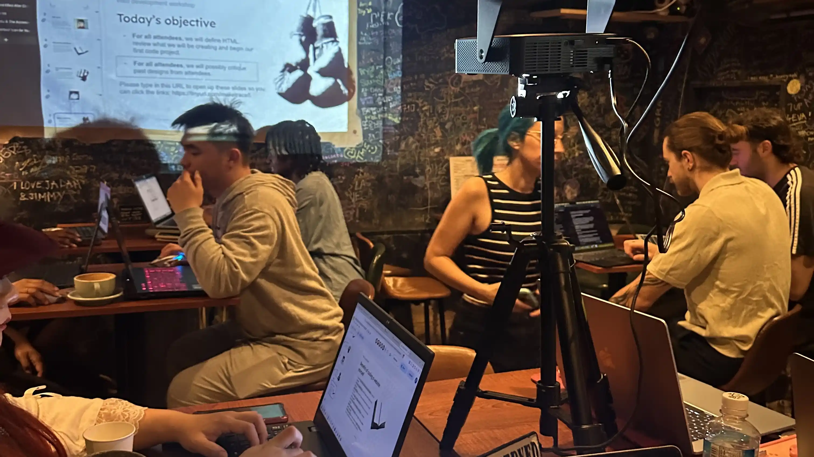
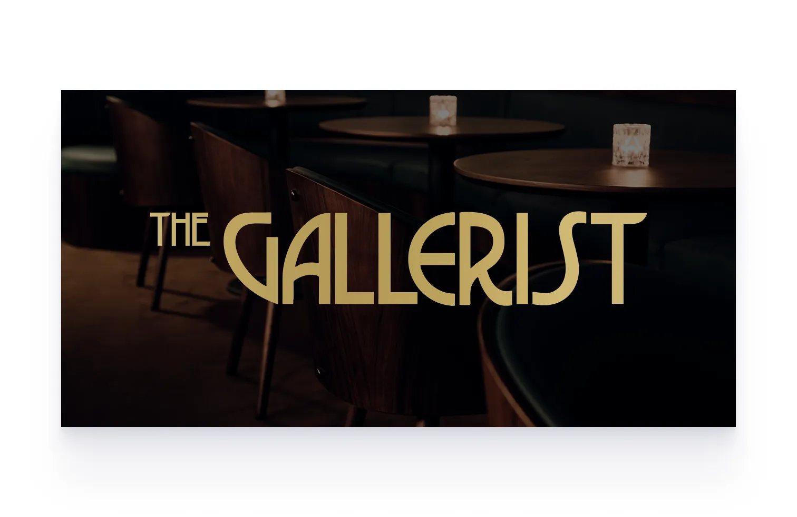
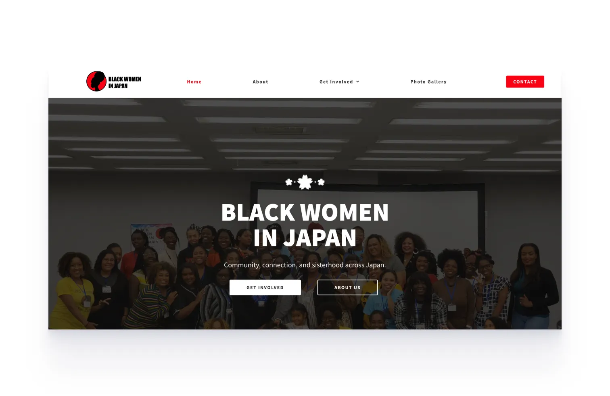
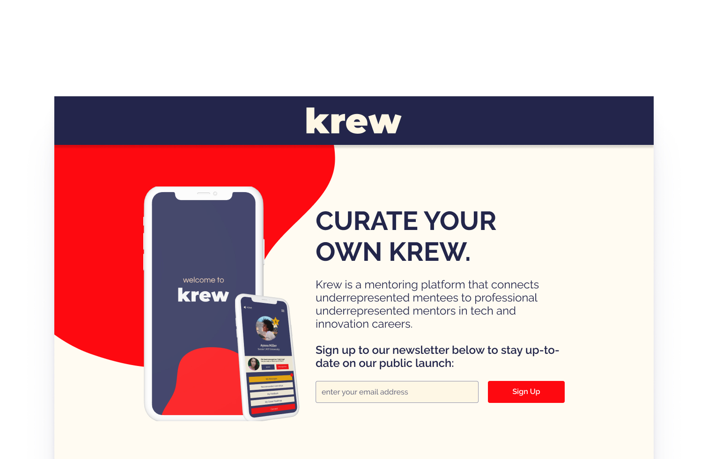

HTML
Experienced

Creativity, Uniqueness, Nerve and Talent
 Github
Github
Get to know more
5+ years
Marketing and Design
BFA
Bachelor's of Fine Arts
Traci (preferred name) is a designer and marketing specialist with 5+ years of experience in each field respectively. Right now, she is currently employed as a web designer with Waste Creative Japan. She has been living in Japan for 5 years and is active in the local Osaka design community. From the beginning of 2026, she has planned and produced free Web Design workshops for the community. Traci is an advocate for women in tech and an advocate for providing free and quality education for the greater community to learn new skills. Not only is she a designer and marketing specialist, she is an illustrator and a frontend developer. She's currently learning web development and is looking for more opportunities to grow her skills in the field. Check out some of Traci's work before you go!
Empowering the community through

Traci has been hosting free web design workshops for the Osaka community since the beginning of 2026. The workshops are designed for beginners and intermediate learners. While learning web design and development, Traci hopes to empower the community to learn new skills and gain confidence. Although small, the workshops have been well received and Traci looks to steadily expand the workshops in the future to reach more people in the community. The workshops are held in English, and are open to anyone who is interested in learning more about web design and development. Soon enough, they will be held in Japanese too! You can find more information about the workshops on Traci's Facebook page, and you can RSVP for the next workshop using the links below.
Traci has a wide range of
Experienced
Experienced
Beginner
Beginner
Intermediate
Intermediate
Intermediate
Intermediate
Intermediate
Intermediate
Intermediate
Experienced
Browse Traci's recent

The Gallerist Osaka is a contemporary art lounge and speakeasy. One-page website designed and developed by Traci.

Black Women in Japan is a nonprofit organization. Developed and designed on Wordpress by Traci.

Krew App was a group hackathon project focused on providing mentorship to underserved communities in Philadelphia.
Get in touch
Let's reclaim our sovereignty on the web! Reach out to Traci for inquiries regarding web design and development, workshops, or any other questions you may have.